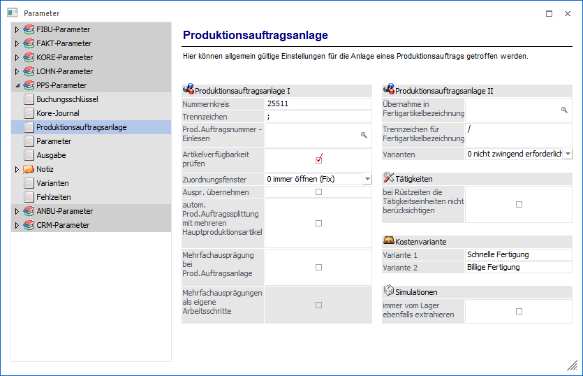
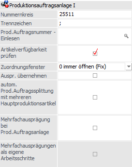
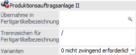
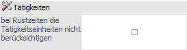
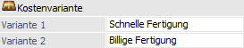
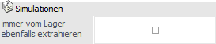

Über den Bereich "PPS-Parameter - Produktionsauftragsanlage" können die allgemeinen Einstellungen für die Anlage von Produktionsaufträgen vorgenommen werden.
Hinweis
Standardmäßig wird das Fenster in einem "Lesemodus" geöffnet, d.h. es können die bestehenden Einstellungen kontrolliert, Änderungen allerdings nicht durchgeführt werden. Hierfür muss zunächst mit Hilfe des Buttons "Bearbeiten" der "Bearbeitungsmodus" aktiviert werden. Alternativ kann diese Aktivierung auch über das Kontextmenü der rechten Maustaste (Funktion "Applikation xxx bearbeiten") erfolgen.

Produktionsauftragsanlage I

Ø Nummernkreis
Bei der Projektanlage wird die hier eingegebene Nummer vorgeschlagen, diese kann jedoch gegebenenfalls noch editiert werden.
Ø Trennzeichen
Wird ein Projekt aus der Fakturierung übernommen, dann setzt sich die Projektnummer aus der Kundennummer und der Laufnummer des Auftrages zusammen. Hier kann das Trennzeichen für diese beiden Werte hinterlegt werden. Das hier hinterlegte Trennzeichen wird auch beim Splitten eines Produktionsauftrags herangezogen (Produktion - Produktionsauftrag splitten).
Ø Prod.Auftragsnummer - Einlesen
In diesem Feld kann definiert werden, wie sich die Produktionsauftragsnummer im Fenster "Produktionsauftrag einlesen" zusammenstellen soll. Mit Mausklick auf den Matchcode oder der F9 Taste in dem Feld öffnet sich das Fenster "Variablen Einfügen", hier können nun die gewünschten Variablen gewählt werden.
Hinweis
Sollte die daraus resultierende Produktionsauftragsnummer größer als 20-Stellen sein, fällt das Programm automatisch auf den Nummernkreis zurück.
Ø Artikelverfügbarkeit prüfen
Ist diese Checkbox aktiv, fällt man beim Einlesen eines Produktionsauftrags automatisch in den Bedarf, in dem festgestellt werden kann, ob alle erforderlichen Komponenten zur Durchführung des Projekts vorhanden sind. Bei Nichtaktivierung dieser Checkbox kann auch später auch manuell der Bedarf geprüft werden.
Ø Zuordnungsfenster
In diesem Feld kann definiert werden, ob das Fenster "Zuordnung" während der Anlage eines Produktionsauftrages geöffnet wird (immer öffnen / nie öffnen / nur im Fehlerfall; Details können dem Kapitel "Produktionsvorbereitung - Register "Notiz / Optionen"" entnommen werden). Standardmäßig ist das Öffnen des Fensters hinterlegt. Die Funktion steuert das Öffnen des Fensters bei der Anlage des Produktionsauftrages in den folgenden Programmbereichen:
ü Belegerfassen
ü Produktionsvorbereitung
ü Produktionsauftrag einlesen
ü Expressendmeldung
ü Produktionsauftrag splitten
Hinweis
Beim Stornieren eines Arbeitsschritts können Ausprägungen, die bei der jeweiligen (Teil-)Endmeldung verwendet wurden, wiederhergestellt werden, und zwar abhängig von der Selektion bei dieser Option bzw. auch davon, ob die Ausprägungen vor der Endmeldung (z.B. in der Produktionskorrektur) oder erst während der Endmeldung gewählt wurden. Es gibt dabei die folgenden Variationen:
ü Variante A: Ausprägung wird
vor der Endmeldung gewählt (z.B. in der Korrektur)
Wenn diese Option auf
"immer öffnen" eingestellt ist, dann wird versucht, die Ausprägungen beim
Arbeitsschritt stornieren wiederherzustellen. Wenn diese Option auf "nie öffnen"
eingestellt ist, wird ebenfalls versucht, die Ausprägungen beim Arbeitsschritt
stornieren wiederherzustellen.
ü Variante B: Ausprägung wird
erst bei der Endmeldung gewählt
Wenn diese Option auf "immer öffnen"
eingestellt ist, dann wird versucht, die Ausprägungen beim Arbeitsschritt
stornieren wiederherzustellen. Wenn diese Option auf "nie öffnen" eingestellt
ist, dann wird NICHT versucht, die Ausprägungen beim Arbeitsschritt stornieren
wiederherzustellen, d.h. die Stücklistenteile sind nach dem Arbeitsschritt
Storno nicht ausgeprägt.
Ø Ausprägungen übernehmen
Ist diese Option aktiv, werden bei der Produktionsvorbereitung (sofern hier auch die Option "Mehrfachausprägung bei Prod.Auftragsanlage" auch aktiv ist) bzw. beim Produktionsauftrag einlesen (sofern mit der neuen Gruppieren-Funktion gearbeitet wird und auf Ausprägungen komprimiert wurde) die Ausprägungen vom Produktionsartikel inkl. Verhältnis zur Gesamtproduktionsmenge gespeichert und bei darunterliegenden Artikel als automatische Aufteilung eingetragen (sofern noch keine Ausprägungen gewählt worden sind).
Beispiel
Ein Produktionsauftrag über 6 Stück vom Produktionsartikel "T-Shirt mit Aufdruck" wird erfasst, und zwar mit der Größenausprägungen 1x SMALL, 2x MEDIUM und 3x LARGE. Es werden somit 6 Stück T-Shirt-Rohling als Material benötigt, wiederum in der Größenausprägungen 1x SMALL, 2x MEDIUM und 3x LARGE. (Der Rohling ist nur mit dem Hauptartikel in der Stückliste des Fertigartikels hinterlegt.) Bei der Produktionsvorbereitung (bzw. auch beim Produktionsauftrag einlesen) wird der Rohling mit dieser Option automatisch in die jeweiligen Mengen aufgeteilt.
Ø autom. Prod.Auftragssplittung mit mehreren Hauptproduktionsartikeln
Bei Aktivierung dieser Checkbox, wird ab dem 2. Produktionsauftrag, in dem selben Kundenauftrag, automatisch ein neuer Auftrag angelegt. Die Auftragsnummer bekommt eine fortlaufende Nummer angehängt.
Ø Mehrfachausprägungen bei Prod.Auftragsanlage
Mit dieser Option kann gesteuert werden, dass bei der Anlage von Produktionsaufträgen mit Ausprägungshauptartikeln (der wieder ein Produktionsartikel sein muss) nach dem Bestätigen der Menge das Ausprägungsfenster geöffnet wird. Dort können dann die einzelnen Ausprägungen gewählt werden. Wird das Fenster anschließend wieder geschlossen/gespeichert, erscheinen diese Ausprägungen im Vorbereitungs-INFO-Formular auf der rechten Seite.
Ø Mehrfachausprägungen als eigene Arbeitsschritte
Diese Option kann nur zusammen mit der Option " Mehrfachausprägungen bei Prod.Auftragsanlage" verwendet werden. Ist diese Option aktiviert, dann wird pro Ausprägung ein eigener Arbeitsschritt angelegt. Ist die Option nicht aktiv, werden alle Ausprägungen als ein Arbeitsschritt angelegt.
Beispiel
Es werden Fahrräder mit unterschiedlichen Farben produziert. Im Ausprägungsfenster wurden 2 Rote und 2 Grüne gewählt.
a) Die Option ist aktiv: Es wird ein Produktionsauftrag über 2 rote Fahrräder (mit einem Sub-Arbeitsschritt für 4 Reifen und 4 Bremsen und 2 Schaltungen) und ein weiterer Produktionsauftrag - mit der gleichen Produktionsauftragsnummer- für die 2 grünen Fahrräder angelegt.
b) Die Option ist nicht aktiv: Es wird nur ein Produktionsauftrag über 2 rote und 2 grüne Fahrräder (mit den Subarbeitsschritten für 8 Reifen, 8 Bremsen und 4 Schaltungen) angelegt.
Produktionsauftragsanlage II

Ø Übernahme in Fertigartikelbezeichnung
Während des Belegerfassens können Werte aus den Stücklisten-Komponenten in die Produktionsartikel-Bezeichnung übertragen werden. Die Variablen aus dem Artikelstamm (Artikelview und Bereiche "Zusatzfelder", "Preise", "Lager" und "Texte") stehen im Feld "Übernahme in Fertigartikelbezeichnung" für die Übernahme zur Verfügung. Mit dem Matchcode können die Werte auf eine komfortable Weise selektiert werden. Bei der Auswahl ist zu beachten, dass die Bezeichnung der Produktionsartikel mit 255 Zeichen begrenzt ist. Eine "Überfüllung" (d.h. wenn zu viele Werte für die Übernahme ausgewählt sind) des Feldes bewirkt, dass die Fertigartikel-Bezeichnung bei 255 Zeichen abgeschnitten wird.
Ø Trennzeichen für Fertigartikelbezeichnung
Das Trennzeichen zur Trennung der einzelnen Werte in der zusammengebildeten Fertigartikelbezeichnung ist im Feld ""Trennzeichen für Fertigartikelbezeichnung" zu hinterlegen.
Ø Varianten
An dieser Stelle kann definiert werden, ob die Auswahl einer Variante bei der Anlage eines Produktionsauftrags (Öffnen der Stückliste in der Belegerfassung, Produktionsvorbereitung, Produktionsauftrag einlesen) zwingend erforderlich ist oder nicht.
ü 0 - nicht zwingend
erforderlich
Die Auswahl einer Variante ist nicht zwingend erforderlich.
ü 1 - muss eingegeben werden
Die
Auswahl einer Variante muss erfolgen.
Hinweis
Diese Einstellung kann durch die Option "Varianten" im Stücklistenstamm (Register "Zusatz") übersteuert werden.
Tätigkeiten

Ø bei Rüstzeiten die Tätigkeitseinheiten nicht berücksichtigen
Wenn diese Option aktiviert ist, wird die Rüstzeit gerechnet ohne den Wert im Feld "Einheit" in der Tätigkeit zu berücksichtigen.
Kostenvariante

Ø Variante 1
In diesem Feld kann die Bezeichnungen der ersten Kostenvarianten einer Tätigkeit definiert werden. Standardmäßig ist die Bezeichnung "Schnelle Fertigung" hinterlegt.
Ø Variante 2
In diesem Feld kann die Bezeichnungen der zweiten Kostenvarianten einer Tätigkeit definiert werden. Standardmäßig ist die Bezeichnung "Billige Fertigung" hinterlegt.
Simulation

Ø immer vom Lager ebenfalls extrahieren
Mit dieser Option kann gesteuert werden, ob die Option "immer vom Lager" im Stücklistenstamm für die Simulation gelten soll, d.h. ob diese Zeilen extrahiert werden sollen. Standardmäßig ist die Option deaktiviert.
Hinweis
Beim Umwandeln der Simulation in einen Produktionsauftrag werden eventuell extrahierten Zeilen wieder laut Stücklistenstamm berücksichtigt, d.h. die Option "immer vom Lager" wird bei Anlage des "richtigen" Produktionsauftrags berücksichtigt. Vorgenommene Änderungen in den Stücklisten der Simulationen gehen beim Umwandeln verloren.